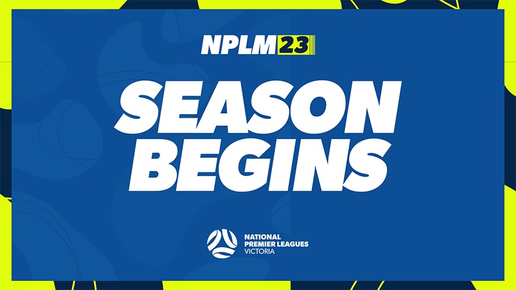
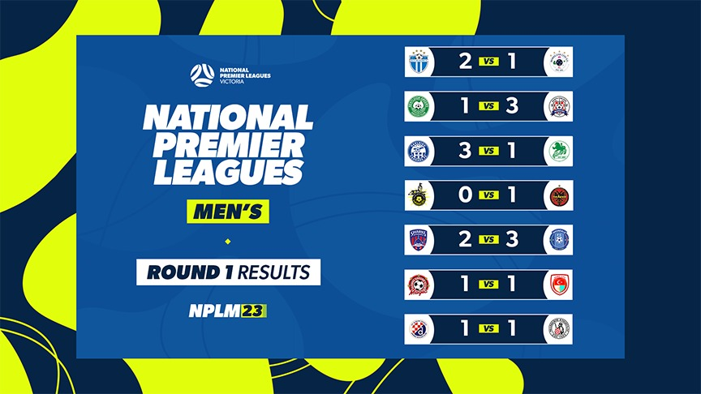
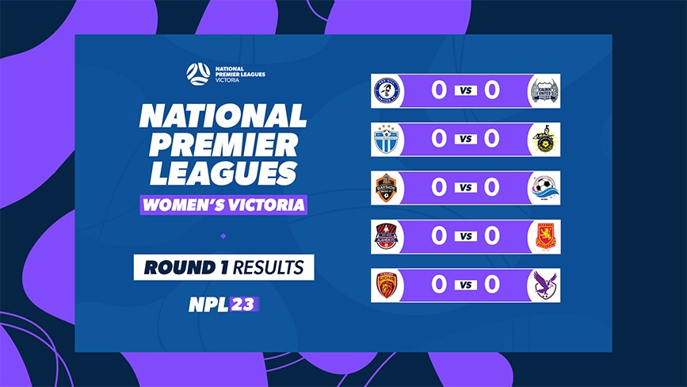
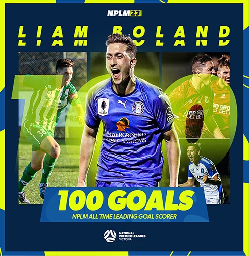
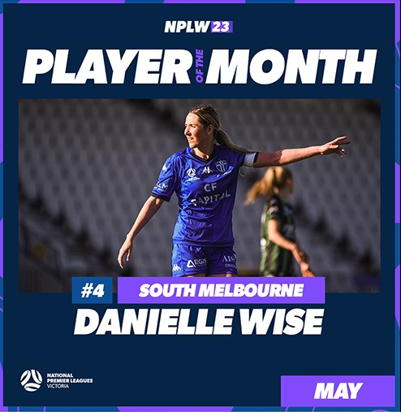
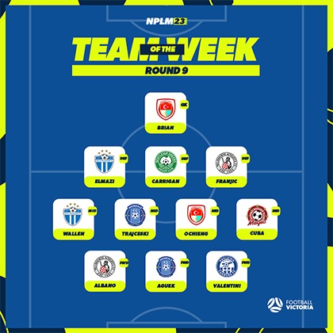
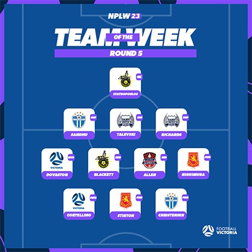
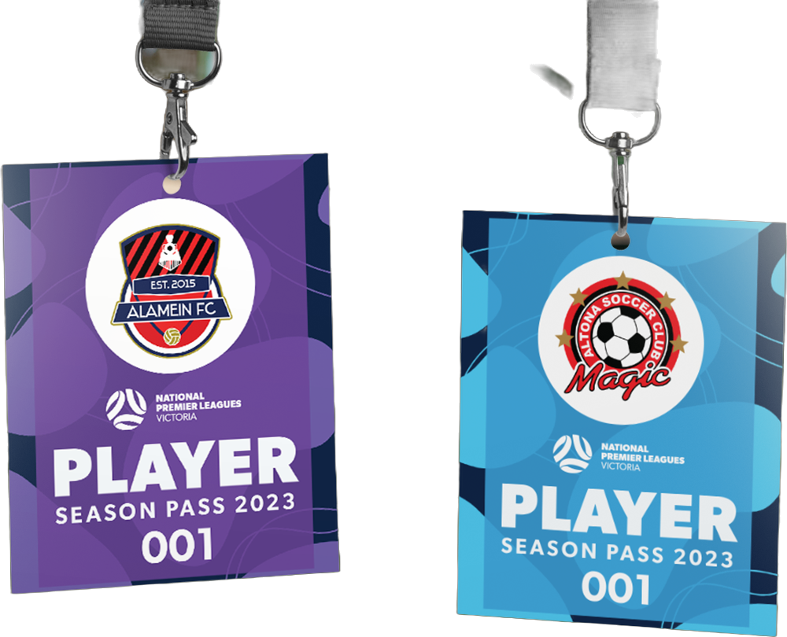
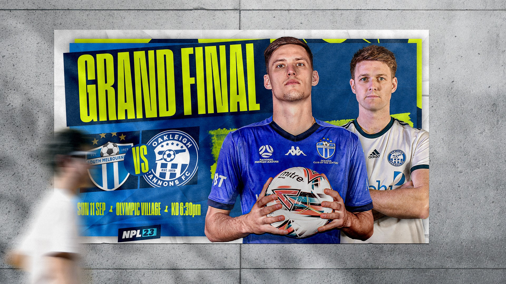

05 / Football Victoria.
A redesign and rebrand of the National Premier Leagues Victoria for the 2023 season, across both the men's and women's competitions. Created as Senior Graphic Designer at Football Victoria, the new identity ran through social, website art, match day signage, flyers and accreditations.
Brand · Digital · Motion · Print
05 / The brand
NPLM23 + NPLW23
The brief was to refresh what was already there with a more modern edge, and build an identity that stayed bold and consistent across every competition. One system, two colourways: lime for the men's league, purple for the women's.
A full season of social content, from the launch post to weekly results, Team of the Week and the big milestones, all built from the same kit so every post reads as the NPL at a glance.







The identity carried off screen and onto the ground: match day signage, printable flyers and accreditations, including player season passes made for every club in the league.

Grand Final poster for South Melbourne v Oakleigh Cannons at Olympic Village, built to stop people in their tracks on the way past.
